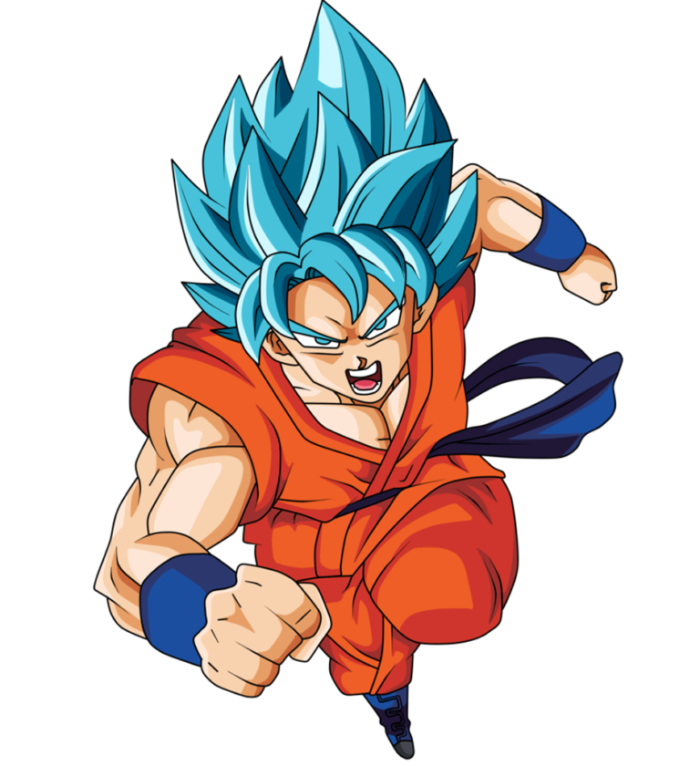

|  |
Son Gokū (孫 悟空?) es un personaje ficticio, protagonista de la serie de manga y anime Dragon Ball. Fue creado por Akira Toriyama en 1984. Al comienzo de la historia, Gokū aparece como un niño que practica sobrehumana, pero más adelante se revela que es un extraterrestre las artes marciales y que posee una cola de mono y una fuerza de la raza ficticia saiyajin, y que su nombre original es Kakarotto (カカロット?) Su nombre proviene de Sun Wukong, un personaje de la historia china Viaje al Oeste,8 y su nombre como saiyajin, Kakarotto, proviene de una deformación del inglés carrot (キャロット kyarotto?, «zanahoria»). |
|---|---|